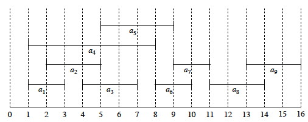
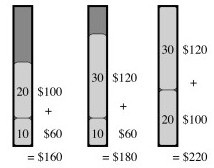

Outline
- Prelude: Greedy Algorithms and Dynamic Programming
- Example: Activity Selection Problem
- Greedy Strategy
- Huffman Codes
Readings and Screencasts
- Read the first three sections of CLRS Chapter 16, although you need not read the details of the proofs. We are not covering Matroids (the 4th section).
This presentation follows the CLRS reading fairly closely, selecting out the most relevant parts and explaining a few things in more detail. (The associated videos change the ordering somewhat: 13A provides a conceptual introduction, leaving the activity selection example for 13B.)
Prelude: Greedy Algorithms and Dynamic Programming
Both Dynamic Programming and Greedy Algorithms are ways of solving optimization problems: a solution is sought that optimizes (minimizes or maximizes) an objective function.
Dynamic Programming:
- Finds solutions bottom-up (solves subproblems before solving their super-problem)
- Exploits overlapping subproblems for efficiency (by reusing solutions)
- Can handle subproblem interdependence
Greedy Algorithms "greedily" take the choice with the most immediate gain.
- Find solutions top-down (commit to a choice, then solve sub-problems)
- Assume that if the objective function is optimized locally it will be optimized globally
- Cannot handle interdependent subproblems
For some problems, but not all, local optimization actually results in global optimization.
We'll use an example to simultaneously review dynamic programming and motivate greedy algorithms, as the two approaches are related (but distinct).
Activity Selection Problem
Suppose that activities require exclusive use of a common resource, and you want to schedule as many as possible.
Let S = {a1, ..., an} be a set of n activities.
Each activity ai needs the resource during a time period starting at si and finishing before fi, i.e., during [si, fi).
(Why not [si, fi]?)
The optimization problem is to select the largest set of non-overlapping (mutually compatible) activities from S.
We assume that activities are sorted by finish time f1 ≤ f2 ≤ ... fn-1 ≤ fn (this can be done in Θ(n lg n)).
Example
Consider these activities:
Here is a graphic representation:

Suppose we chose one of the activities that start first, and then look for the next activity that starts after it is done. This could result in {a4, a7, a8}, but this solution is not optimal.
An optimal solution is {a1, a3 a6, a8}. (It maximizes the objective function of number of activities scheduled.)
Another one is {a2, a5, a7, a9}. (Optimal solutions are not necessarily unique.)
How do we find (one of) these optimal solutions? Let's consider it as a dynamic programming problem ...
Optimal Substructure Analysis
A dynamic programming analysis begins by identifying the choices to be made, and assuming that you can make an optimal choice (without yet specifying what that choice is) that will be part of an optimal solution.
It then specifies the possible subproblems that result in the most general way (to ensure that possible components of optimal solutions are not excluded), and shows that an an optimal solution must recursively include optimal solutions to the subproblems. (This is done by reasoning about the value of the solutions according to the objective function.)
We'll approach Activity Selection similarly. I'll try to clarify the reasoning in the text ...
For generality, we define the problem in a way that applies both to the original problem and subproblems.
Suppose that due to prior choices we are working on a time interval from i to j. This could be after some already-scheduled activity ai and before some already-scheduled event aj, or for the original problem we can define i and j to bound the full set of activities to be considered.
Then the candidate activities to consider are those that start after ai and end before aj:

Now let's define Aij to be an optimal solution, i.e., a maximal set of mutualy compatible activities in Sij. What is the structure of this solution?
At some point we will need to make a choice to include some activity ak with start time sk and finishing by fk in this solution. This choice will leave two sets of compatible candidates after ak is taken out:
- Sik : activities that start after ai finishes, and finish before ak starts
- Skj : activities that start after ak finishes, and finish before aj starts
(Note that Sij may be a proper superset of Sik ∪ {ak} ∪ Skj, as activities incompatible with ak are excluded.)
Using the same notation as above, define the optimal solutions to these subproblems to be:
- Aik = Aij∩ Sik: the optimal solution to Sik
- Akj = Aij ∩ Skj: the optimal solution to Skj
So the structure of an optimal solution Aij is:
Aij = Aik ∪ {ak} ∪ Akj
and the number of activities is:
|Aij| = |Aik| + 1 + |Akj|
By the "cut and paste argument", an optimal solution Aij for Sij must include the optimal solutions Aik for Sik and Akj for Skj, because if some suboptimal solution A'ik were used for Sik (or similarly A'kj for Skj), where |A'ik| < |Aik|, we could substitute Aik to increase the number of activities (a contradiction to optimality).
Therefore the Activity Scheduling problem exhibits optimal substructure.
Recursive Solution
Since the optimal solution Aij must include optimal solutions to the subproblems for Sik and Skj, we could solve by dynamic programming.
Let c[i, j] = size of optimal solution for Sij (c[i, j] has the same value as |Aij|, but apparently we are switching notation to indicate that this is for any optimal solution). Then
c[i, j] = c[i, k] + c[k, j] + 1 (the 1 is to count ak).
We don't know which activity ak to choose for an optimal solution, so we could try them all:

This suggests a recursive algorithm that can be memoized, or we could develop an equivalent bottom-up approach, filling in tables in either case.
But it turns out we can solve this without considering multiple subproblems.
Being Greedy
We are trying to optimize the number of activities. Let's be greedy!
- The more time that is left after running an activity, the more subsequent activities we can fit in.
- If we choose the first activity to finish, the most time will be left.
- Since activities are sorted by finish time, we will always start with a1.
- Then we can solve the single subproblem of activity scheduling in this remaining time.
Since there is only a single subproblem, the Sij notation, bounding the set at both ends, is more complex than we need. We'll simplify the notation to indicate the activities that start after ak finishes:
Sk = {ai ∈ S : si ≥ fk}
So, after choosing a1 we just have S1 to solve (and so on after choices in recursive subproblems).
By optimal substructure, if a1 is part of an optimal solution, then an optimal solution to the original problem consists of a1 plus all activities in an optimal solution to S1.
But we need to prove that a1 is always part of some optimal solution (i.e., to prove our original intuition).
Theorem: If Sk is nonempty and am has the earliest finish time in Sk, then am is included in some optimal solution.
Proof: Let Ak be an optimal solution to Sk, and let aj ∈ Ak have the earliest finish time in Ak. If aj = am we are done. Otherwise, let A'k = (Ak - {aj}) ∪ {am} (substitute am for aj).
Claim: Activities in A'k are disjoint.
Proof of Claim: Activities in Ak are disjoint because it was a solution.
Since aj is the first activity in Ak to finish, and fm ≤ fj (am is the earliest in Sk), am cannot overlap with any other activities in A'k.
No other changes were made to Ak, so A'k must consist of disjoint activities.
Since |A'k| = |Ak| we can conclude that A'k is also an optimal solution to Sk, and it includes am.
Therefore we don't need the full power of dynamic programming: we can just repeatedly choose the activity that finishes first, remove any activities that are incompatible with it, and repeat on the remaining activities until no activities remain.
Greedy Algorithm Solution
Let the start and finish times be represented by arrays s and f, where f is assumed to be sorted in monotonically increasing order.
Add a fictitious activity a0 with f0 = 0, so S0 = S (i.e., the entire input sequence).
Our initial call will be RECURSIVE-ACTIVITY-SELECTOR(s, f, 0, n).

The algorithm is Θ(n) because each activity is examined exactly once across all calls: each recursive call starts at m, where the previous call left off. (Another example of aggregate analysis.)
If the activities need to be sorted, the overall problem can be solved in Θ(n lg n)).
This algorithm is nearly tail recursive, and can easily be converted to an iterative version:

Let's trace the algorithm on this:
A Closer Look at the Greedy Strategy
Instead of starting with the more elaborate dynamic programming analysis, we could have gone directly to the greedy approach.
Typical steps for designing a solution with the greedy strategy (and two properties that are key to determining whether it might apply to a problem):
- Consider how we can make a greedy choice (local optimization of the objective function), leaving one subproblem to solve.
- Greedy Choice Property: Prove that the greedy choice is always part of some optimal solution.
- Optimal Substructure: Demonstrate that an optimal solution to the problem contains within it optimal solutions to the subproblems.
Then we can construct an algorithm that combines the greedy choice with an optimal solution to the remaining problem.
Dynamic Programming compared to Greedy Strategy:
Both require optimal substructure, but ...
Dynamic Programming
- Each choice depends on knowing the optimal solutions to subproblems.
- Bottom-up: Solve subproblems first
Greedy Strategy
- Each choice depends only on local optimization
- Top-down: Make choice before solving subproblems
Example: Knapsack Problems
These two problems demonstrate that the two strategies do not solve the same problems. Suppose a thief has a knapsack of fixed carrying capacity, and wants to optimize the value of what he takes.
0-1 knapsack problem:
There are n items. Item i is worth $vi and weighs wi pounds. The thief wants to take the most valuable subset of items with weight not exceeding W pounds. It is called 0-1 because the thief must either not take or take each item (they are discrete objects, like gold ingots).
In the example, item 1 is worth $6/pound, item 2 $5/pound and item 3 $4/pound.
The greedy strategy of optimizing value per unit of weight would take item 1 first.
Fractional knapsack problem:
The same as the 0-1 knapsack problem except that the thief can take a fraction of each item (they are divisible substances, like gold powder).
Both have optimal substructure (why?).
Only the fractional knapsack problem has the greedy choice property:
Fractional: One can fill up as much of the most valuable substance by weight as one can hold, then as much of the next most valuable substance, etc., until W is reached:
0-1: A greedy strategy could result in empty space, reducing the overall dollar density of the knapsack. After choosing item 1, the optimal solution (shown third) cannot be achieved:

Huffman Codes
We are going to see several greedy algorithms throughout the semester. The activity scheduler was good for illustration, but is not important in practice. We should look at one important greedy algorithm today ...
Huffman codes provide an efficient way to compress text, and are constructed using a greedy algorithm. We only have time to review how this important algorithm works; see the text for analysis.
Binary Codes
Fixed-length binary codes (e.g., ASCII) represent each character with a fixed number of bits (a binary string of fixed length called a codeword).
Variable-length binary codes can vary the number of bits allocated to each character. This opens the possibility of space efficiency by using fewer bits for frequent characters.
Example: Suppose we want to encode documents with these characters:
With a 3 bit code it would take 300,000 bits to code a file of 100,000 characters, but the variable-length code shown requires only 224,000 bits.
Prefix codes (better named prefix-free codes) are codes in which no codeword is a prefix of another.
For any data, it is always possible to construct a prefix code that is optimal (though not all prefix codes are optimal, as we will see below).
Prefix codes also have the advantage that each character in an input file can be "consumed" unambiguously, as the prefix cannot be confused with another code.
Binary Tree Representation of Prefix Codes
We can think of the 0 and 1 in a prefix code as directions for traversing a binary tree: 0 for left and 1 for right. The leaves store the coded character. For example, here is the fixed-length prefix code from the table above represented as a binary tree:
Consuming bits from an input file, we traverse the tree until the character is identified, and then start over at the top of the tree for the next character.
Exercise: Decode 101100100011
But the above tree uses three bits per character: it is not optimal. It can be shown that an optimal code is always represented by a full binary tree (every non-leaf node has two children).
For example, an optimal prefix code (from the table reproduced again here) is represented by this tree:

Exercise: Decode 10111010111
Huffman's Algorithm
Huffman's greedy algorithm constructs optimal prefix codes called Huffman Codes.
It is given a set C of n characters, where each character has frequency c.freq in the "text" to be encoded.
The optimality of a code is relative to a "text", which can be what we normally think of as texts, or can be other data encoded as sequences of bits, such as images.
- We can construct a generic Huffman code for a universe of texts, such as all texts in English, by estimating the frequency of characters in this universe of texts.
- More commonly, we contruct Huffman codes optimized for particular documents. Then the document-specific code needs to be passed on along with the compressed document.
The algorithm creates a binary tree leaf node for each character, annotated with its frequency, and the tree nodes are then put on a min-priority queue (this is only implied in line 2 below).
Then the first two subtrees on the queue (those with minimum frequency) are
dequeued with Extract-Min, merged into a single tree, annotated with the sum
of their frequencies, and this single node is re-queued.
This process is repeated until only one tree node remains on the queue (the root). Since a tree is being constructed and |E| = |V|−1 we can just run the loop until n−1 and know that there will be one node left at this point.
Here is the algorithm:

Informal Correctness
The "greedy" aspect is the choice to merge min-frequency nodes first, and assume that this local minimization will result in an optimal global solution.
Intuitively, this approach will result in an optimal solution because the lowest frequency items will be "pushed down" deeper in the tree, and hence have longer codes; while higher frequency items will end up nearer the root, and hence have the shortest codes.
Cormen et al. prove correctness with two Lemmas for the two properties:
- Greedy choice property: there exists an optimal prefix code where two characters having the lowest frequency in C are encoded with equal length strings that differ only in the last bit, as they are leaf nodes.
- Optimal-substructure property: if the tree constructed by merging two nodes is optimal it must have been constructed from an optimal tree for the subproblem.
Complexity
The initial BUILD-MIN-HEAP implied by line 2 requires O(n) time.
The loop executes n times, with O(lg n) required for each heap operation.
Thus, HUFFMAN is O(n lg n).
An Example of Huffman Coding
The characters are in a min priority queue by frequency:

Take out the two lowest frequency items and make a subtree that is put back on the queue as if it is a combined character:

Combine the next lowest frequency characters:

Continuing, tree fragments themselves become subtrees:
Two subtrees are merged next:
The highest frequency character gets added to the tree last, so it will have a code of length 1:
One might wonder why the second most frequent character does not have a code of length 2. This would force the other characters to be deeper in the tree, giving them excessively long codes.
Wrapup
We will encounter several examples of greedy algorithms later in the course, including classic algorithms for finding minimum spanning trees (Topic 17) and shortest paths in graphs (Topics 18 and 19).
Dan Suthers Last modified: Sat Mar 1 17:53:22 HST 2014
Images are from the instructor's material for Cormen et al. Introduction to
Algorithms, Third Edition.